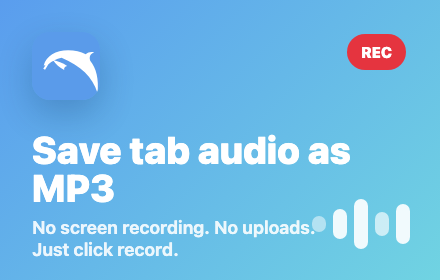

Check the tab
Return to the exact tab that is producing sound. Unmute the Chrome tab and keep it active when you start Dolphin.
Dolphin troubleshooting
Run a short test, identify where the audio path failed, and fix the recording before repeating a long session.
Local recording. No uploads.

Start here
A short test separates a tab-audio problem from a long-session problem. Use the same website and player you plan to record.
Keep the Chrome tab that is playing the audio visible and active.
Play a normal section and make sure the tab and website player are not muted.
Begin recording while that source tab is active, then let it run for about 10 seconds.
Stop before changing pages. Check that the editor shows a waveform and play the preview.
If the preview has sound, restart for the full session. If it is silent, use the checks below.
Silent file
A silent result usually means the wrong tab was active, the player or tab was muted, playback had not started, or the page changed its audio source after recording began.
Open the active-tab recording checklistReturn to the exact tab that is producing sound. Unmute the Chrome tab and keep it active when you start Dolphin.
Raise the website player's own volume and confirm the current section is not silent before recording.
Stop after 10 seconds. A flat waveform is a reason to restart, not to continue a long capture.
If the player reloads, opens a new tab, or switches streams, stop and begin a fresh recording from the new active tab.
Interrupted session
Tab reloads, browser sleep, changing the captured tab, memory pressure, and very long sessions can interrupt capture.
Save any usable recording that remains, close unnecessary tabs, keep the computer awake, and record long material in shorter sections. Run another 10-second test before restarting.
Review the complete Chrome tab recording workflowDownload
First confirm the editor contains a waveform and the recording can be previewed. Trim only after you know the audio exists.
Then check Chrome downloads, the default download folder, available disk space, and whether Chrome blocked or asked where to save the file. Export again only after the current download attempt has finished.
Follow the MP3 save and trim guidePermissions
Reload the source page, make it active, and start Dolphin again. If Chrome or the extension was updated, close and reopen the tab before testing.
Open chrome://extensions, find Dolphin, confirm the extension is enabled, and check that its site access has not been restricted for the page you are testing.
Isolate the cause
If one site fails, test Dolphin on a simple public page with ordinary browser audio that you are allowed to record.
If the simple page works, the original website, player, protection, or tab transition is likely the cause. If both tests fail, restart Chrome and repeat the permission checks.
Limits
Dolphin is designed for audio you have permission to capture. It does not bypass DRM, protected players, website restrictions, or Chrome security boundaries.
Do not repeatedly change permissions or install unrelated tools to work around a protected source. Use an authorized download or ask the content owner instead.
Read Dolphin's privacy and recording boundariesStill stuck
Include the Chrome version, Dolphin version, the type of website or player, the step that failed, whether the 10-second test produced a waveform, and whether another ordinary audio page worked.
Do not send private recordings, passwords, payment details, or protected media. Use the support contact shown on Dolphin's Chrome Web Store listing.
Ready to record Chrome tab audio?
FAQ
The recording may have started from the wrong active tab, the Chrome tab or website player may be muted, playback may not have started, or the page may have changed its audio source.
Record about 10 seconds from the intended source tab, stop before navigating, and confirm that the editor shows a waveform and the preview contains sound.
Tab reloads, browser sleep, changing the captured tab, memory pressure, and very long sessions can interrupt recording. Save the usable part and restart in a shorter section.
The website may have opened a new tab, reloaded the player, or switched audio streams. Start a new recording from the tab that is now producing the sound.
Confirm the recording has a waveform, then check Chrome downloads, the selected download folder, available disk space, and any blocked-download message.
Open chrome://extensions, find Dolphin, confirm it is enabled, and review whether site access is restricted for the page you are testing.
Chrome lets users manage extension shortcuts from chrome://extensions/shortcuts.
Not necessarily. Dolphin does not bypass DRM, protected players, website restrictions, or Chrome security boundaries.
Use the support contact on Dolphin's Chrome Web Store listing. Include your Chrome and Dolphin versions, the failed step, and the result of a 10-second test without attaching private recordings.